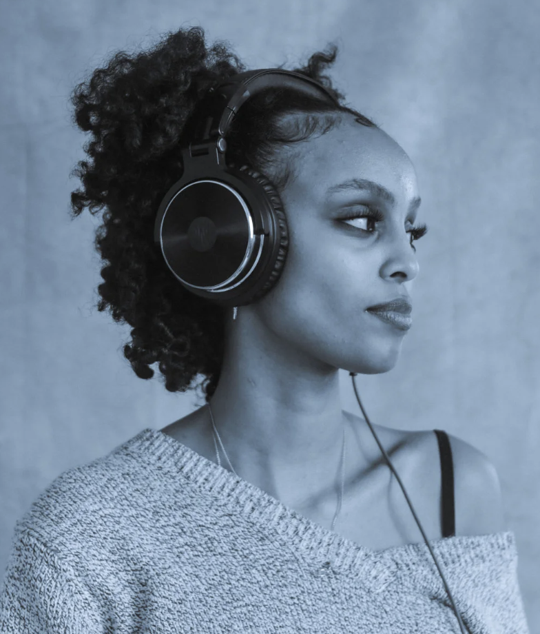

I’m an interdisciplinary artist and data storyteller specializing in digital humanities and data visualization. What’s found at this
intersection of data science and narrative is my passion for research: thriving in themes of memory, refugee stories and global politics,
and ethnomusicology. Using interactive map-making and archives, I’m excited by the possibilities of using design and data to disseminate
information and research.
I am completing my M.S. in Data Analytics and Visualization at the Pratt Institute, with a dual-certificate in Digital Humanities and
Spatial Analysis. Before this, I worked as an Assistant Curator and Producer at Public Functionary in Minneapolis, Minnesota, and as a
Research Lead at the University of Minnesota’s Roy Wilkins Center for Human Relations and Social Justice. My 6+ years of experience in
research, storytelling, data science, and the arts continues to become refined as I grow in my education.
To learn more about my creative projects, check out Right Brain
An interactive project mapping the potential route refugees in 1989-1995 Ethiopia and Eritrea may have taken to Khartoum, Sudan, taking into account conflict zones and elevation. Part 2, Neighborhood Resurrection is ongoing and investigates the story of childhood best-friends that reunited after fleeing to different camps forty years later.
A spatial analysis of Somali acculturation patterns in three distinct U.S. counties: Hennepin (Minnesota), Franklin (Ohio), and King (Washington)
A digital repository exploring nostalgia across diasporic narratives with interviews and reflections from artists part of Adera Lije; Adera Lijen.